Eva Benefícios · 2022–2024
A Eva Benefícios era uma startup do setor de benefícios flexíveis fundada em 2021, em Ouro Preto (MG). Em um momento de aceleração digital, a empresa precisava que sua marca acompanhasse o crescimento — mas o sistema visual existente travava a produção e limitava a consistência entre canais.
O time de marketing era enxuto: uma gerente, uma social media, um profissional de SEO e duas designers. Esse contexto exigiu multidisciplinaridade real — não só design, mas entendimento de negócio, comunicação e estratégia de marca.
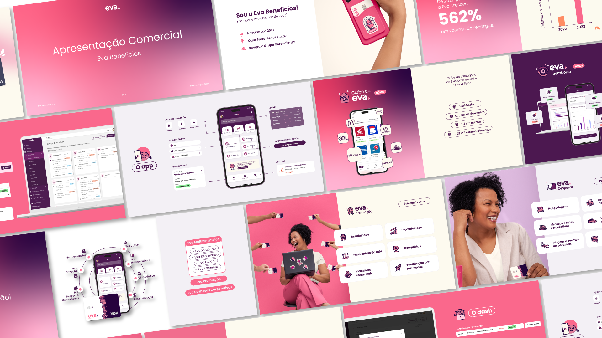
Apresentação comercial — sistema visual aplicado em material de vendas
O Ivo nasceu da necessidade de humanizar uma marca de benefícios financeiros — um segmento que costuma ser frio e distante. A proposta era criar um personagem carismático, adaptável e com personalidade própria, que pudesse aparecer em qualquer contexto da marca sem perder reconhecimento.
O design circular simples confere aparência amigável e memorável. As cores da identidade visual da Eva foram incorporadas ao personagem, garantindo coerência. A flexibilidade de expressões e acessórios permite que o Ivo se adapte a diferentes contextos sem perder sua identidade.
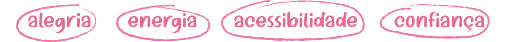
A família de expressões e variações temáticas transforma o Ivo em uma linguagem — cada contexto tem sua versão, mantendo a mesma essência.
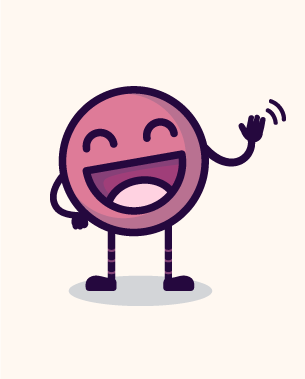
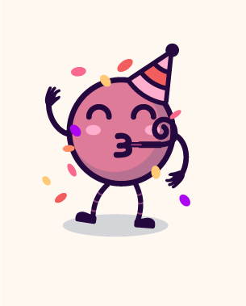
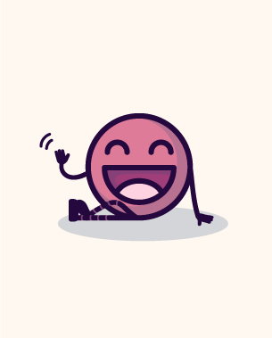
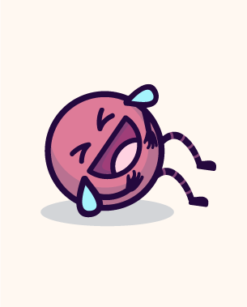
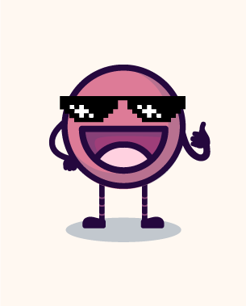
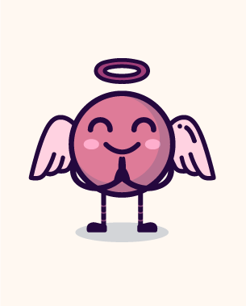
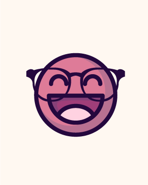
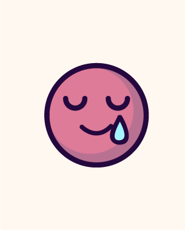
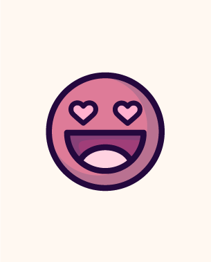
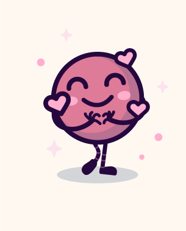
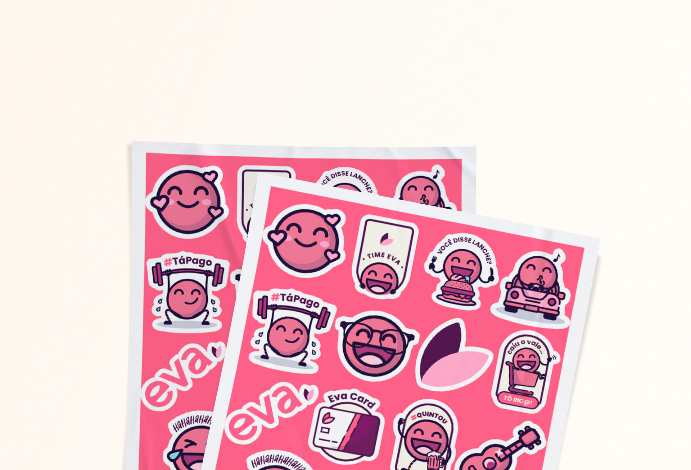
Cartela de adesivos — o mascote desdobrado em linguagem de stickers
Uma identidade bem construída prova seu valor quando escala. Do Instagram ao press kit físico, a marca Eva passou a se comunicar com consistência em todos os pontos de contato.
Responsável pelo design do Instagram, Facebook e LinkedIn — mantendo consistência visual e aplicando o sistema em diferentes formatos de conteúdo.
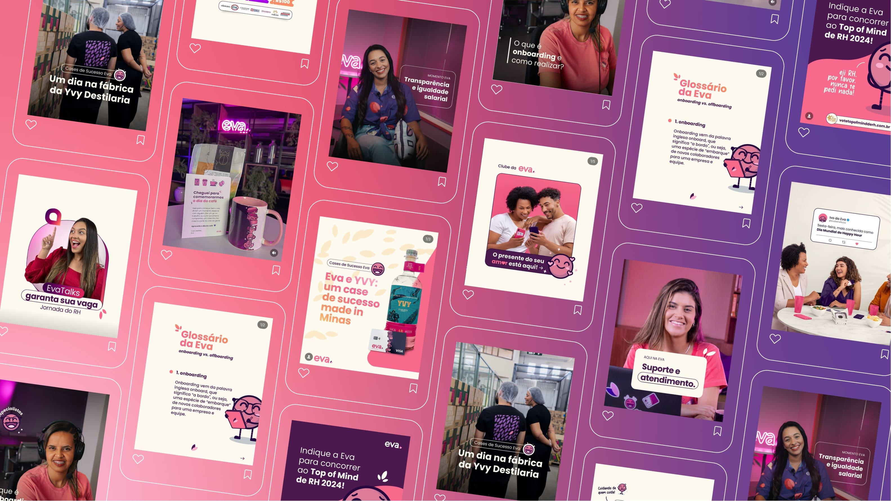
Feed Instagram — sistema visual aplicado em múltiplos formatos e temas de conteúdo
Os stories e carrosséis seguiam uma linguagem própria — mais dinâmica, com o Ivo como guia emocional da narrativa.
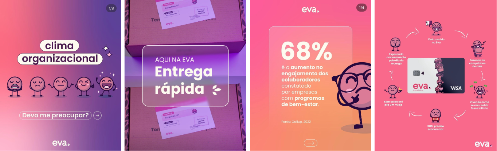
Stories — narrativas sequenciais com o mascote como elemento condutor
A identidade visual precisava funcionar também no mundo físico — de press kits e embalagens a ações de endomarketing. O padrão gráfico de folhas e o Ivo garantiram coerência do digital ao impresso.
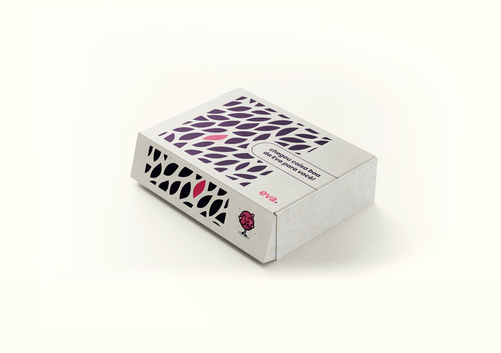
Caixa de envio — identidade visual aplicada em embalagem
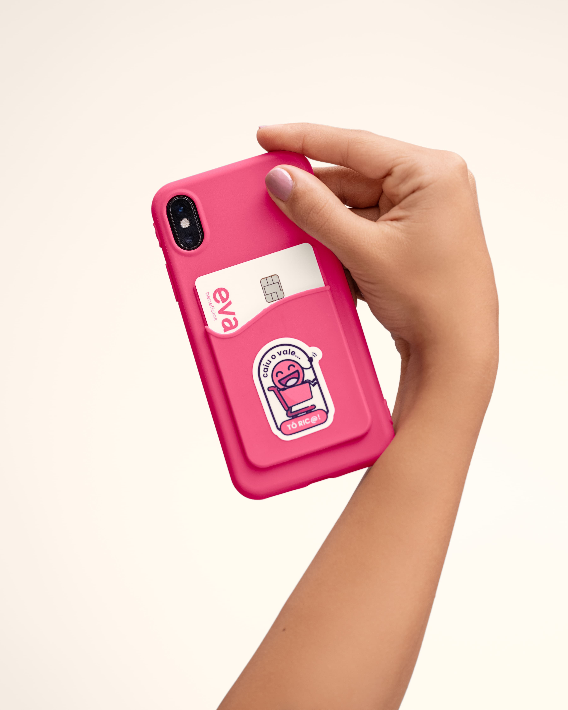
Card holder e cartão Eva — ensaio fotográfico da marca
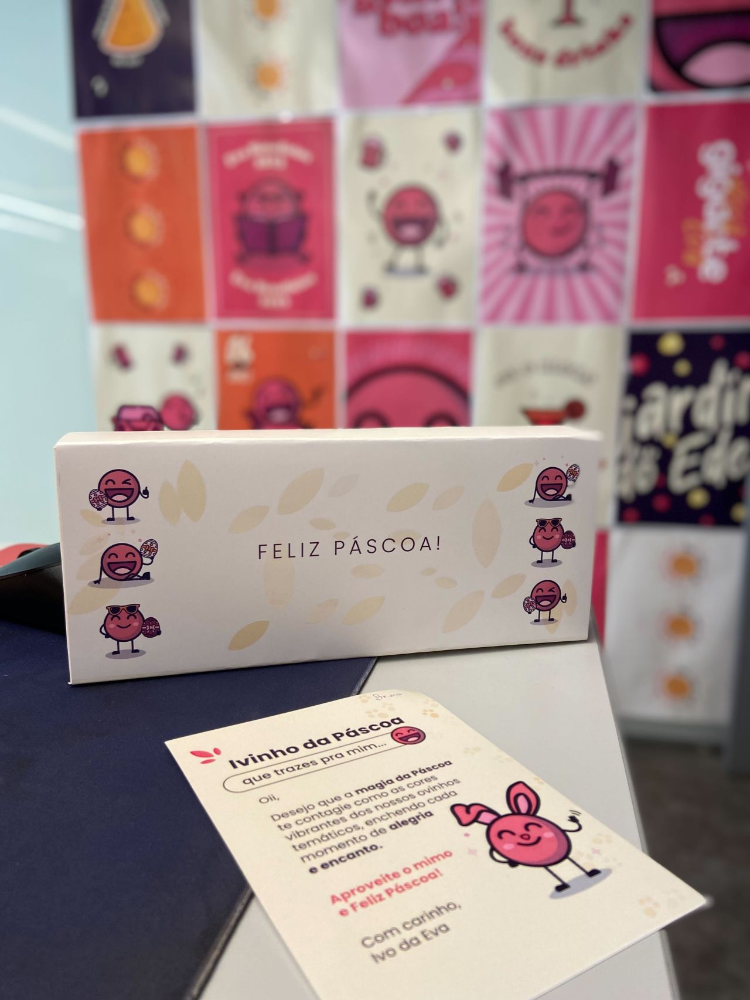
Ação de Páscoa — endomarketing com embalagem personalizada e card do Ivo
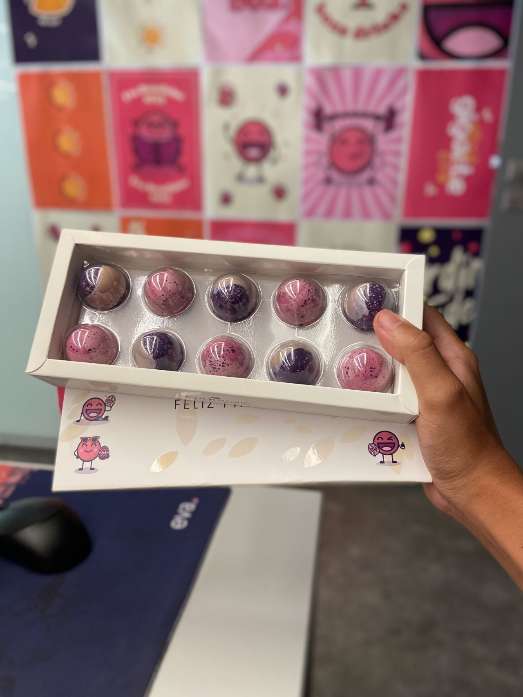
Kit Páscoa — caixa de chocolates com identidade da Eva
Participei da direção criativa do ensaio fotográfico da marca — garantindo que os materiais físicos e a identidade visual tivessem presença real nas fotos.
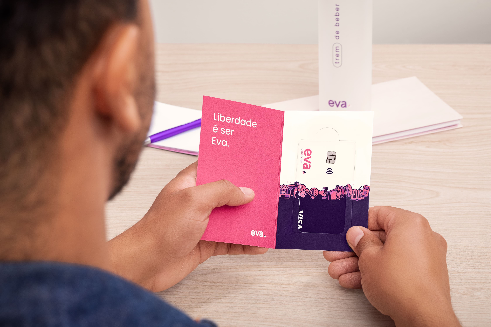
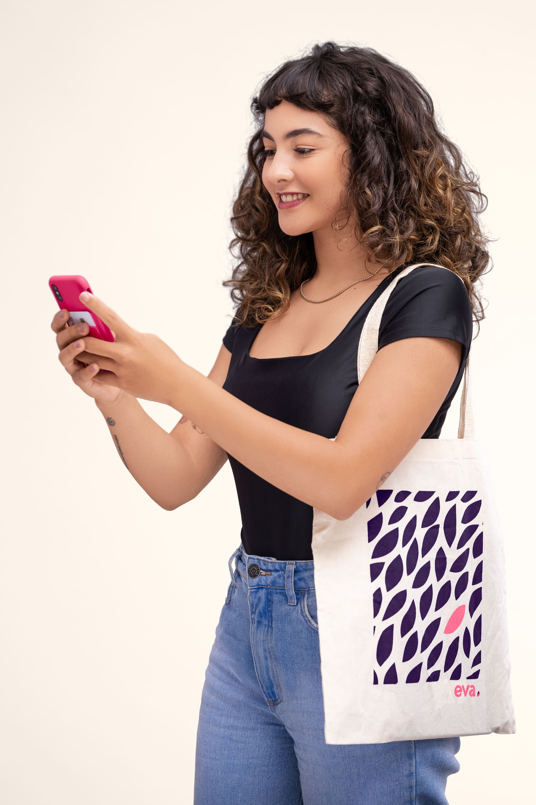
Desenvolvimento de landing pages com foco em aquisição de leads e conversão — estrutura de informação clara, hierarquia visual definida e o sistema de marca como base.
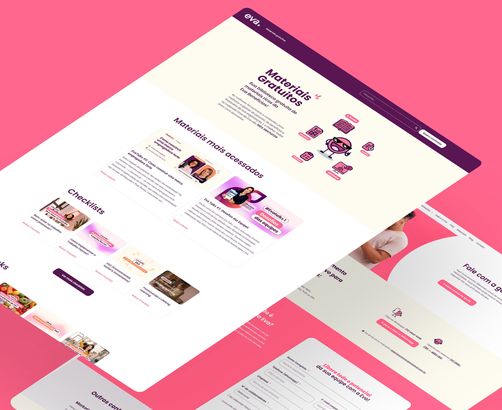
Landing page de materiais gratuitos — estrutura orientada à conversão